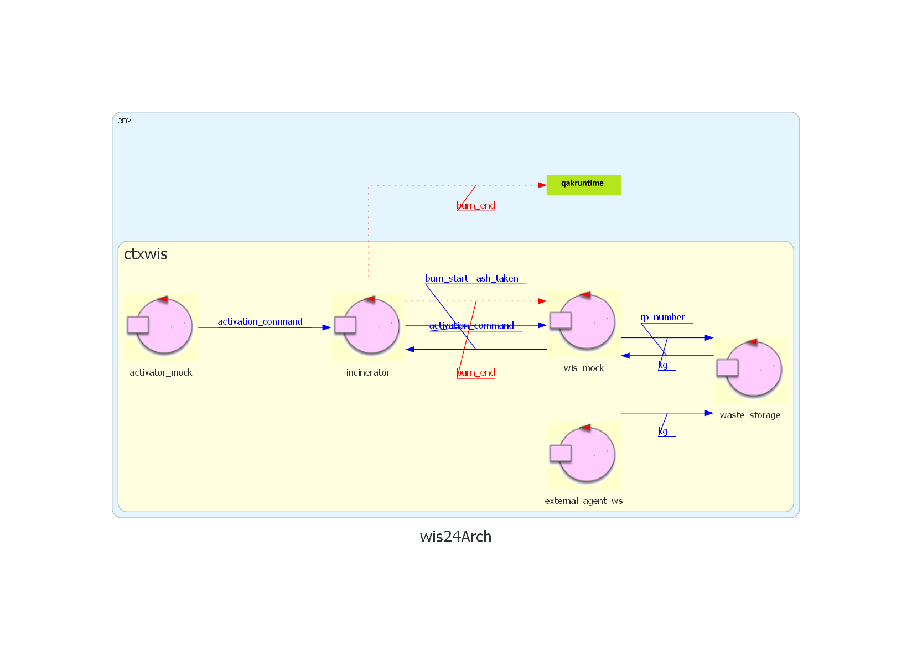
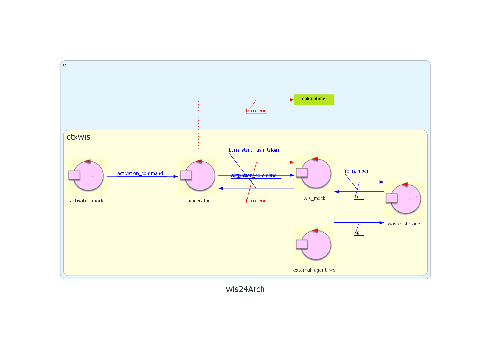
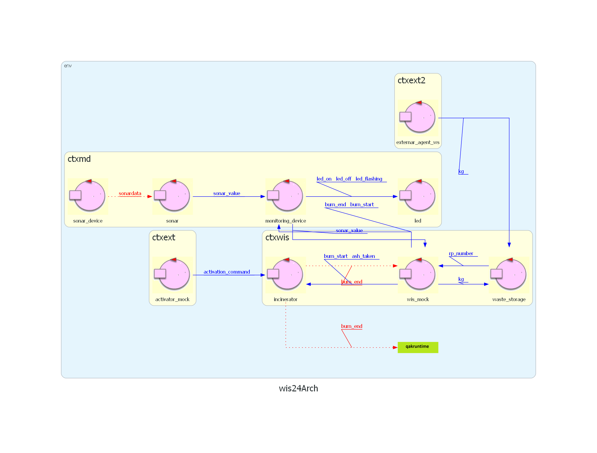

Introduction
SPRINT3: progettazione e sviluppo di Led, Sonar e MonitoringDevice (Arasi).
In questo sprint verrà sviluppato MonitoringDevice e le componenti gestite da esso.
Sonar verrà sviluppato solo logicamente, in uno sprint futuro verrà sviluppato anche l'interazione con il sonar fisico.
Nel precedente SPRINT siamo giunti a questo questa architettura iniziale di riferimento: 
In questo sprint verrà sviluppato MonitoringDevice e le componenti gestite da esso.
Sonar verrà sviluppato solo logicamente, in uno sprint futuro verrà sviluppato anche l'interazione con il sonar fisico.
Nel precedente SPRINT siamo giunti a questo questa architettura iniziale di riferimento: 
Requirements
Requirement analysis
MonitoringDevice
Composto da un RaspberryPi che gestisce un Sonar e un Led (forniti dal committente). Deve inviare a WIS lo stato di AshStorage.Sonar e Led in quanto collegati ad un RaspberryPI sono possibili da considerare in un contesto diverso dal resto del sistema.
MonitoringDevice in quanto coordinatore farà anch'esso parte di questo contesto.
In maniera analoga a WIS MonitoringDevice racchide tutta la logica delle sue componenti.
In quanto MonitoringDevice deve essere costantemente aggiornato può essere sviluppato come un attore
MonitoringDevice deve gestire il funzionamento di Led che potrebbe trovarsi in uno stato in cui Incinerator sta bruciando e contemporaneamente AshStorage sia pieno/vuoto, in questo caso è stato deciso di far lampeggiare il led in quanto indica uno stato più significativo per il MonitoringDevice.
Non è stato definito quando AshStorage sia vuoto.
Sonar
Si occupa della misurazione della distanza tra se stesso e la pila di cenere nell'AshStorage. Per questo scopo si interfaccia con un sonar fisico (SONAR HC-SR04) che gli manda le distanze rilevate.L'informazione di 3-4 RP che AshStorage può contenere è superflua perche è stato già dato il limite DLIMIT al sonar.
Il Led
Deve accendersi/spegnersi o lampeggiare in base allo stato del sistema. Anche qusto si interfaccia con il led fisico.Agenti esterni
Lo sviluppo degli agenti esterni per rifornire e svuotare la WasteStorage e AshStorage non sono dei requisiti:Modello dei requisiti

Problem analysis
MonitoringDevice
Il MonitoringDevice funge da coordinatore al Sonar e al Led, che in quanto collegati ad un RaspberryPI sono possibili da considerare in un contesto diverso.Il MonitoringDevice sarà quindi l'intermediario tra WIS e le sue componenti per evitare di dare maggiori responsabilità alle componenti stesse.
Messaggi inviati a WIS:
Dispatch sonar_value:sonar_value(K)
Messaggi ricevuti da WIS:
Dispatch burn_end:burn_end(X)Dispatch burn_start:burn_start(X)
Per determinare quando AshStorage sia vuoto si presuppone che all'avvio del sistema sia vuoto.
Led
Il Led è una componente molto semplice a cui viene solo inviato il comando da eseguire, la gestione dello stato è trasferita sul MonitoringDevice.Messaggi inviati a Led:
Dispatch led_on:led_on(N)Dispatch led_off:led_off(N)Dispatch led_flashing:led_flashing(N)
Sonar
Il Sonar è la componente che deve comunicare al MonitoringDevice i propri rilevamenti.Sonar è modellabile come un attore in quanto deve costantemente aggiornare MonitoringDevice del livello di AshStorage.
Essendo però il sonar una componente hardware bisogna progettare l'attore Sonar in modo che sia "Technology Indipendent".
Ciò è reso possibile grazie all'inversione delle dipendenze, rendendo l'attore Sonar un "Adapter" ai sonar hardware e definendo noi l'interfaccia per la comunicazione a questi oggetti.
L'output del sonar hardware è uno stream di dati da mantenere sempre aggiornato.
Per fare ciò seguiremo il modello definito in Sonar24, introducendo un attore sonar_device che incapsuli l'output del sonar fisico e lo filtri comunicando le informazioni rilevanti a Sonar
Messaggi inviati da Sonar a MonitoringDevice:
Dispatch sonar_value:sonar_value(K)
Messaggi inviati da sonar_device a Sonar:
Event sonardata:sonardata(K)
Agenti esterni
Avendo a disposizione il sonar fisico non è necessario modellare un agente esterno per simularne il funzionamento.Architettura logica
Test plans
Si deve verificare che MonitoringDevice gestisca correttamente il proprio stato interno per inviare al Led i
messaggi corretti.
Project
Progetto
Inizialmente sonar_device verrà sviluppato solo come mock per testare il funzionamento del resto del sistema, in uno SPRINT successivo verrà implementato nel completo.
Nonostante si presuppone che AshStorage venga inizzializzato vuoto è stato implementato il seguente sistema per sicurezza:
MonitoringDevice salva la distanza più alta rilevata in una variabile inizialmente settata ad un valore basso. Ciò viene fatto per verificare se alle successive modifiche di rilevazione del sonar questo valore venga uguagliato, indicando che AshStorage è vuoto.
Nel caso in cui AshStorage non venga inizializzato vuoto continuerà a funzionare considerandolo con dimensioni ridotte e imposterà il valore corretto della distanza quando AshStorage verrà svuotato completamente continuando a funzionare correttamente.
Inizialmente sonar_device verrà sviluppato solo come mock per testare il funzionamento del resto del sistema, in uno SPRINT successivo verrà implementato nel completo.
Nonostante si presuppone che AshStorage venga inizzializzato vuoto è stato implementato il seguente sistema per sicurezza:
MonitoringDevice salva la distanza più alta rilevata in una variabile inizialmente settata ad un valore basso. Ciò viene fatto per verificare se alle successive modifiche di rilevazione del sonar questo valore venga uguagliato, indicando che AshStorage è vuoto.
Nel caso in cui AshStorage non venga inizializzato vuoto continuerà a funzionare considerandolo con dimensioni ridotte e imposterà il valore corretto della distanza quando AshStorage verrà svuotato completamente continuando a funzionare correttamente.
Testing
Il testing è stato sviluppato in MD_test.java
Deployment
Maintenance
Prossimi sviluppi
Nel prossimo SPRINT si procederà ad analizzare e sviluppare OpRObot, in particolare come muoverlo nella
service area correttamente, aggiornando il proprio stato.
By Marko P'yeshchyk, mat: 0001103132, email: marko.pyeshchyk@studio.unibo.it

And Arasi Stefano, mat: 0001103134, email: arasi.stefano@studio.unibo.it
GIT repo: https://github.com/Marko-Pyeshchyk/Waste-Incinerator-Service.git
And Arasi Stefano, mat: 0001103134, email: arasi.stefano@studio.unibo.it
GIT repo: https://github.com/Marko-Pyeshchyk/Waste-Incinerator-Service.git